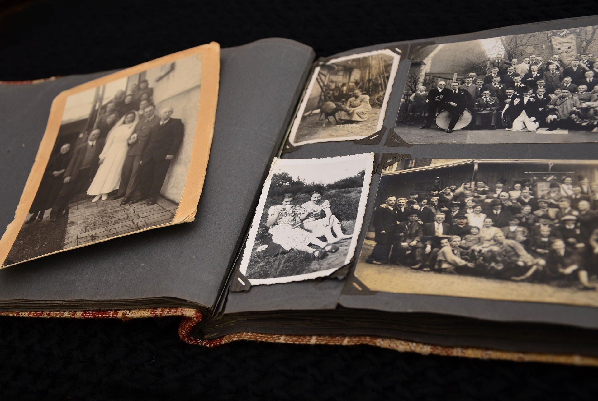
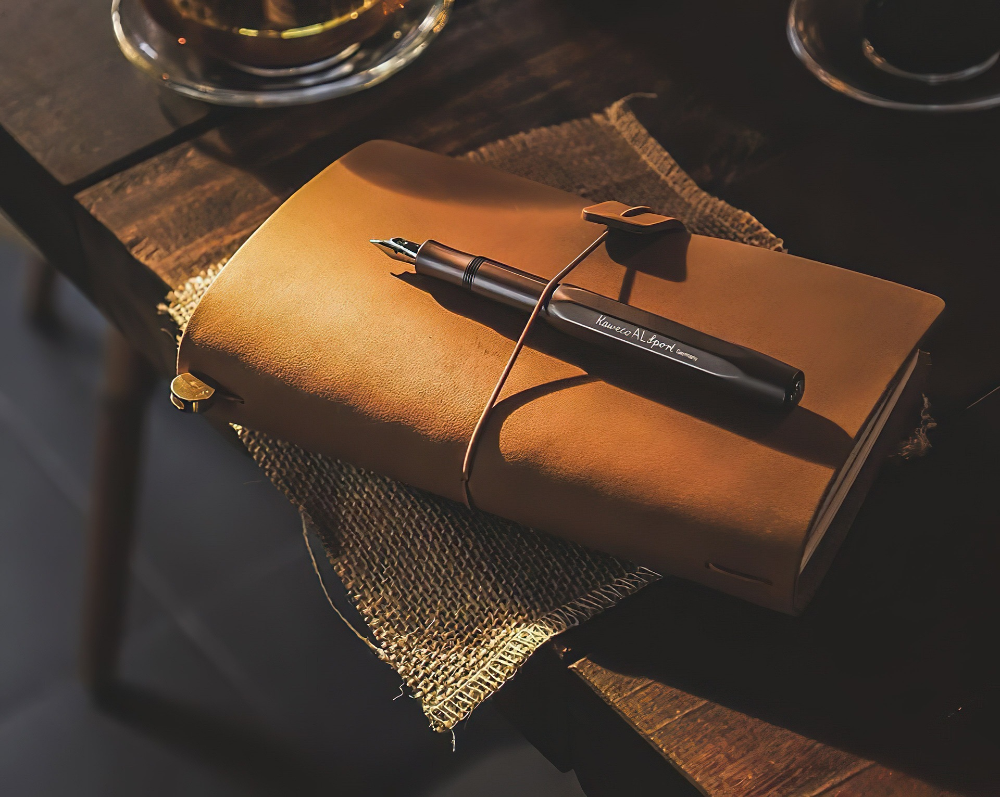

Costuramos, colamos e prensamos à mão — do caderno de uso diário à restauração de exemplares de família. Cada peça passa pelas mesmas quatro etapas que aprendemos há trinta anos.
Ver serviçosCapa dura, acabamento fosco
Resistente à umidade
Feito à mão, padrão único
Cada livro passa mesma sequência de trabalho, do primeiro caderno de páginas soltas até a prensa final.
As folhas são dobradas em cadernos e organizadas na ordem de leitura.
Os cadernos são costurados manualmente com fio encerado, ponto a ponto.
O lombo recebe cola natural, que dá firmeza sem engessar o papel.
O volume descansa na prensa por 24h para fixar a forma definitiva.


"Levei o diário do meu avô, que estava se desfazendo, e voltou como se tivesse sido feito ontem — mas ainda com a capa original."